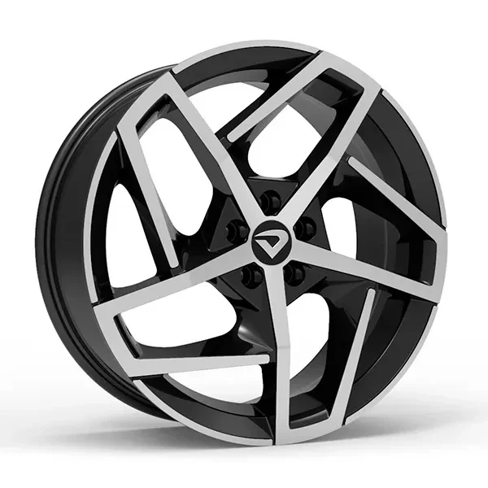
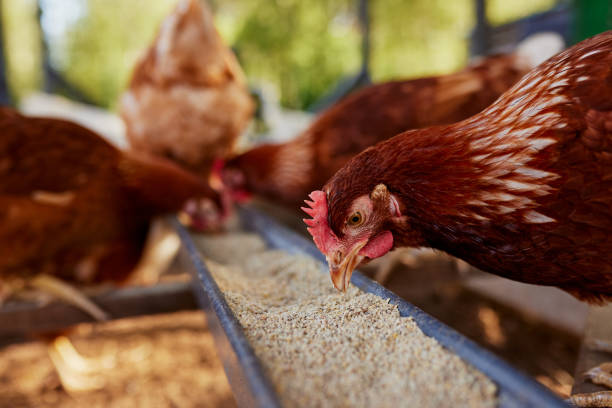

Aplicativo Expo + API local
Tuning Shop
Loja de peças automotivas com área do cliente, carrinho, pedidos, painel administrativo, cadastro de produtos, cálculo de frete, cupons e integração com Firebase.
Portfólio de desenvolvimento
Sites, sistemas e aplicativos criados com foco em interfaces diretas, regras de negócio funcionais e integração com dados locais ou Firebase.
Sobre
Este portfólio reúne trabalhos de estudo e desenvolvimento: uma landing page para granja, uma tela de login com envio para backend PHP e uma loja de peças automotivas com aplicativo, carrinho, pedidos, API local em JSON e sincronização.
Projetos

Aplicativo Expo + API local
Loja de peças automotivas com área do cliente, carrinho, pedidos, painel administrativo, cadastro de produtos, cálculo de frete, cupons e integração com Firebase.

Site institucional
Página web estática para apresentação de granja, produtos, navegação simples e comunicação visual voltada para alimentos naturais.
Tela de autenticação
Interface de login em HTML e CSS conectada por formulário POST para validação em endpoint PHP externo.
Habilidades
Contato
Portfólio local com base nos projetos encontrados no computador.
thiago@example.com